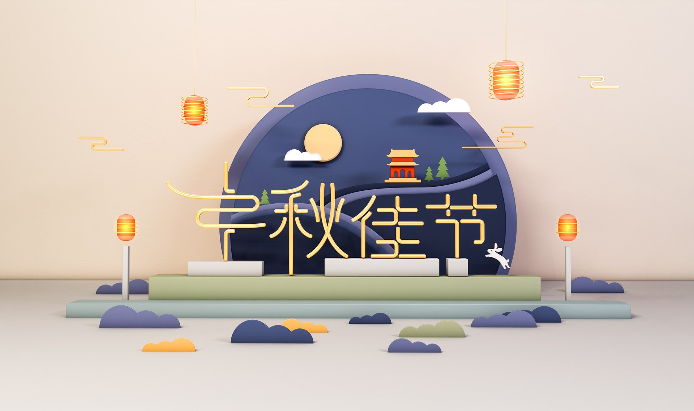
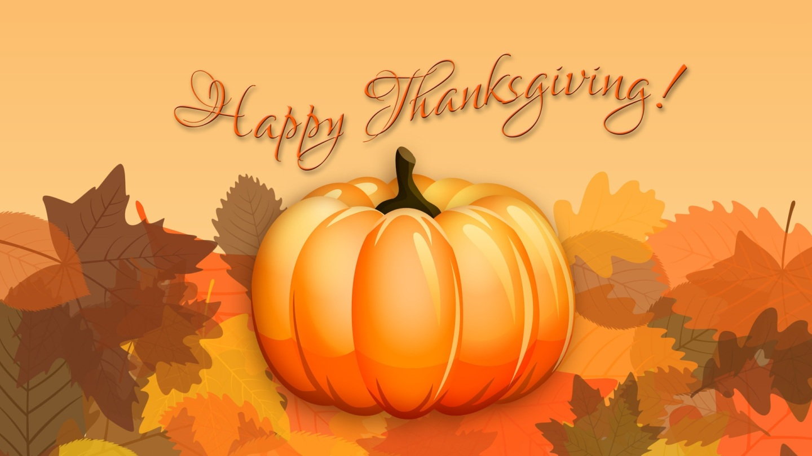
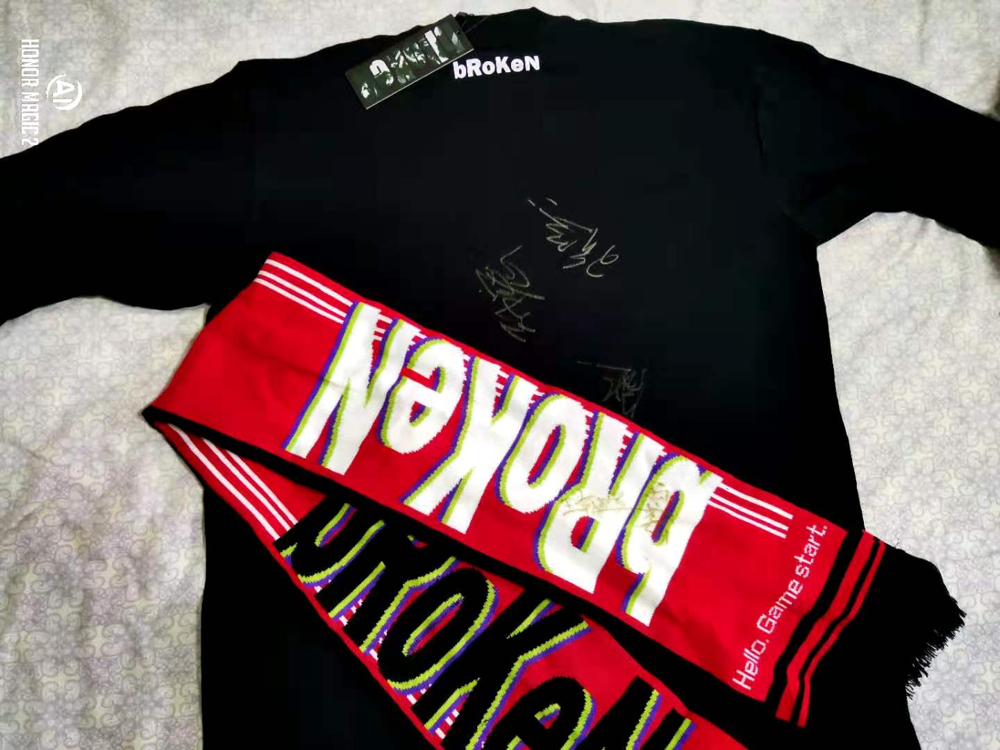

2020 年第四季度总结
这里记录下第四季度自己的一些想法，为了日后翻阅方便！
- 十月
- 物质基础
- 知识的理解程度
- 选择自由
- 路就在脚下
- 十一月
- 你有多自律就有多自由
- 延迟享受
- 博客十年
- 摇滚无用
- 三条经验法则
- 十二月
- 星星不会让我开心
- 梦想是我们自己的
- 向往自由自在的生活
- 如何让生活过得精彩
十月
让痛苦离开的办法，就是自己强大！
马克思主义中，经济基础指社会发展一定阶段上的社会经济制度，即社会生产关系的总和。上层建筑是指，建立在一定经济基础上的社会意识形态以及与之相适应的政治法律制度和设施等的总和。马克思主义认为经济基础是上层建筑的基础，一定的经济基础和一定的上层建筑构成一定的社会形态。经济基础和上层建筑具有辩证关系，即经济基础和上层建筑是辩证统一的。

一 物质基础
有些事情需要思考，有些事情需要记住，有些事情需要进步！
今年的中秋节和国庆节赶到了同一天，很多人都趁着今天最后一个长假出出去旅行，所以我在朋友圈发了一个动态：朋友圈都和商量好了似的，不是结婚就是去西藏的，我就家里蹲着，给你们默默点赞，送上祝福 🤩！咳咳咳，言归正传！放假的时候看到有人发了如下一则信息，我非常认同，所以在这里记录一下。
关于金钱，说到底也是一种资源，这种资源和其他的资源没有太大区别，资源越多，你的自由度越大。有些人说赚钱不是最重要的，做自己喜欢做的事才是最重要的，但如果赚钱能让你做更多你喜欢的事，那么你就该去赚更多的钱。贫穷和无为，拯救不了你，也拯救不了世界。
财富在某种程度上，会帮助你到达不曾到过的地方，领略没有见过的风景。有了足够的财富，你说我对生活要求不高的时候，更可信。这两天老人住进
ICU，感觉钱相当重要。
嗯呢，钱到底总部重要呢？如果问我的话，我可以肯定的告诉大家，那一定是非常重要的。虽然并非是最为重要的那一个，但是绝对是其外的不二之选。物质基础决定上层建筑，我们可以看看我们周围，机会每个人都是活生生的例子。如果一辈子都为了钱而劳命奔波确实是非常失败的，但是我们需要做的就是，端正心态，调整好挣钱和享受生活的天平！
二 知识的理解程度
有些事情需要思考，有些事情需要记住，有些事情需要进步！
最近又看到了一个在推上面的动态，说的是自己的一些感悟，如下所示：
学的越多，了解的越深入，就越来越体会到这个世界上的各种知识有多么深不可测，也会更加意识到自己不懂的内容永远比自己懂的要多。如此一来，就不会乱说话，乱下结论。知乎上有些人，知道一点皮毛就喜欢长篇大论，还跑到别人写的答案下面班门弄斧，搞得真正懂的人尴尬的要死，不知道怎么回复，唉……
说实话知道这个问题存在已经不算困难，我感觉更难的是要随时保持清醒，即便是在和他人争论的时候，要随时控制好自己的情绪和言语！
我从业这
20多年来，像“等用到再学”、“学了不用就会忘”、“算法无用”、“底层用不到”、“学得面广也就越平庸”……还有“没精力”、“没时间”，“工作忙”……这样的观点和借口20年来听一代又一代入行的人一遍又一遍的说……嗯，每个人都喜欢在一些自己做不到的事上找理由，这种能力不教就会……
事实就是这样，也确实存在。尤其是在，近几年程序员满天飞的时候，更为突出。各行各业的大学生、技术工，等等，都在不断在培训班这个大熔炉里面不断地、源源而出。绝大部分人都是为了能够挣多一些的工资，而对于基础理论和本质的理解则几乎没有。想了想，这就是浩哥说的，技术民工。
所以，拒绝变成技术民工，从我做起！
三 选择自由
有些事情需要思考，有些事情需要记住，有些事情需要进步！
今天早上看新闻资讯的时候，看到了 Tinyfool 发的新博文，题目是《你不想上清华是因为不喜欢么？——谈选择自由的三个前提》，主要聊了聊什么是真的选择自由！嗯，很多人喜欢谈自我意识，喜欢谈选择自由，但是很多时候，他们并不知道什么是真的选择自由。
今天我就想聊聊什么是真的选择自由。因为我个人觉得选择自由是我人生最大的一个目标。而选择自由的真实存在建立在三个前提下，第一是可以选择，第二是信息透明，第三是物质基础。
第一 可以选择
- 就是说你所处的环境，你的人生阶段让不让你选择。举个例子，经常有人问，你当年为啥大学选了某某专业。有些人就会侃侃而谈，这个好，那个好，等等。但是其实他没有得选，他的父母让他上哪个专业他只能上哪个专业。
- 但是，如果一个人自己又想要这种自由，又因为这种自由和自己的不经心而受害，他当然也要自己承担起责任。所以，对自己的言行负责，将很早就印入了你的内心之中。
第二 掌握信息
- 很多时候，有的人有选择的自由。但是他不掌握信息。举个例子，你谈恋爱的时候，遇到两个男人，一个是渣男，你最不喜欢的那种。一个是好男人。但是你并不了解这两个人，最后你选择了渣男。信息永远是不对称的，所以，大多数人做出决策和选择的时候，都不见得能给自己带来最大的价值。
- 但是信息自由又是可以去追求的，看书，学习，理解世界，可以让你在很多层面获得更多的信息自由。这些信息的自由就可以让你获得更好的选择。
第三 物质基础
- 从这个角度出发，我开始存钱，存钱的目的还不是为了积累财富，而是给自己获得选择的自由。
是的，自由并非是做任何你想做的事，而是在你不想做某件事情的时候可以不做，并且自由也并非是没有代价的，因为你需要对你的行为负责！说起来比较惭愧，我是在上大学的时候，才意识到了意识到了一些。在小的时候，很多事情我都很难做出决定，或者说是没有做决定的条件和机会。生活的环境和物质基础，决定了我只能按照既定的路线，一步一步的走下去，不知道未来会是什么。
所以，既然你已经找到这些，就应该活出不一样的自己，对吧！这样，当我们多年之后回忆起来也比较有趣，不是吗？守好自己内心的信责，不做违法的时候，是保护好自己和自己的自由最为重要的事情！请勿上头，慢走多思考，少年！
四 路就在脚下
有些事情需要思考，有些事情需要记住，有些事情需要进步！
很早之前看到浩哥，在《极客时间》收费专栏里都谈到了下面几个观点。走过的人才知道，其实重点的东西很简单。我们一直再想弯道超越，结果发现路就在脚下。
- 学英文
还是需要有个环境，如果你的日常环境里就需要让你用到英文你就会学得很快的，比如：到国外生活一段时间，如果没有这种机会，那你就一定要找老外来练习。进入外国公司是比较好的一条路。我的英文能力是我做一线技术支持时提高的。
- 学习能力
学习不是为了找到答案，而主要找到方法。那种靠记忆来学习的方法是非常糟糕的。学习跟编程一样，你在编程解决问题的时候，你要找到一种规律，或是推导出一种公式，然后才能写出代码。学习也一样，你要学会归纳或总结出一种学习的套路，在这种套路下，无论什么样的知识你都可以很快地转换成自己的能力。（当你去找这种套路的时候，你必然会走到基础知识上去的）。
- 工作选择
关于选择工作，首先你得先让自己有竞争力，这样你才会有更多的选项。没有选项，谈不上工作选择。要提高自己的竞争力，你就需要学习那些一般人学不懂的东西。一般人学不懂的东西，通常来说都是难的烦的。所以，当你有发现有学不动的感觉时，这就是那种能比别人竞争力的东西。
十一月
我们要学会在解决问题之后，能够及时反思和总结问题！
无论是生活、工作还是学习，其实本质都是一样的。遇到问题的时候，我们一定想着怎么去解决这个问题，再解决之后我们应该且必须要做的就是 反思和总结。没有反思和总结的话，可能后续我们还会在同一块石头上面跌倒两次。既然是可以避免或者少走弯路的，为什么我们不好好是思考呢？换言之，工作和学习也是一个道理。

一 你有多自律就有多自由
有些事情需要思考，有些事情需要记住，有些事情需要进步！
自律，真的是一件特别没有技术含量的事情，但也是一件最难坚持的事。很多人不能做到自律，就是因为他们生活没有目的，没办法对自己严格。但自律，归根到底，是一场自己与自己的博弈。你有多自律，就有多自由。
在我们忙碌的时候，总是想着，等到自己有空余时间的时候，我要去干这个干那个，那该有多好呀。之后不管是学习还是旅游，都会在结束的时候，变得不一样，走上人生巅峰。然鹅呢？真的在自己有了足够的空余时间来开始干这些事情的时候，却发现自己受限于行动力和执行力，最后的结果就是时间浪费了还什么都没有干成。这样会导致一种恶性的循环！
而今天看到了一个关于时间的理论，那就是 2 分钟规则。顾名思义，就是每当你发现很难开始执行某项任务时，可以试试将其缩减成 2 分钟的版本。这样做的目的是使上手变得超级容易，让你先上手再说。一旦开始做了（这可能是最艰难的一步），你就会开始有动力，可能会继续做下去。一旦开始，继续做下去就会容易得多。有时，你甚至会发现，自己在不知不觉间已经完成了任务。
- 阅读一页 → 阅读 10 页 → 读完第一章
- 写一个句子 → 写文章的开头 → 写出正文
- 穿上跑鞋 → 步行 5 分钟 → 跑步 5 分钟
二 延迟享受
有些事情需要思考，有些事情需要记住，有些事情需要进步！
延迟享受这个没问题，是好事，但是凡事不能过，你不能延迟到自己走不动道的时候再去体验和享受生活。晚了。该享受的时候就去享受，别为难自己。
我常常会想，我们生下来的意义到底是什么？如果只是忙碌的工作来挣更多的钱来应付生活的必须之外，那岂不太没有意思了。虽然说物质是生活的基础，但是一旦你陷入和物资的牢狱之后，再出来恐怕就很难了，放手其实也是一种痛苦的选择。所以，我们要在适合的年龄和阶段干适合自己有意义的事情，这样才能够让生活变得多彩，不是吗？
三 博客十年
有些事情需要思考，有些事情需要记住，有些事情需要进步！
月初的时候，董老师发了一篇博客，题目就是《博客十年》，主要是关于自己博客到现在十年时间的碎碎念。介绍他入行的经过，学习经历以及自己博客这十年以来的发展过程，也同样是对自己的一个总结。但是在后记中，写了这样一段话，让我的内心多多少少有了一些波澜，所以我也想在这里说下什么。
- 董伟明 - 《博客十年》
- 十年很长，十年很短。写博客并不难，难的是坚持。我可能是一个愿意分享的人一直坚持到现在，但当我不再热血不再年轻的时候，我发现自己的精力并不是我想的那般充沛，生活并不是我想的那么美好，太多的事情要做，所以未来更新博客不会再如从前，但是如果我那天停更了，我会写最后一篇告诉大家不必再等。
我的博客到现在为止，也已经开了快四年了，从学校毕业之后到现在也已经四年多了。时间真是一个奇妙的东西，等我们开始回顾的时候，就会发现自己已经老了。我也慢慢地发现，写一篇博客的动力也没有前几年那么大了。但是我一直坚持写博客的原因主要还是想给这个世界留下点东西，证明自己存在过，这一点从开始到现在一直都没有变过。
是的，人生有多少个十年，干点自己现在喜欢的事情也挺好的。
- 多陪陪孩子和家人
- 有时间了出去旅游旅游
- 嗯，打打游戏，也挺好的
所以，如果未来我更新博客不会再如从前那般或那天停更了，我会写最后一篇告诉大家不必再等！人生若只如初见，何事秋风悲画扇？
四 摇滚无用
有些事情需要思考，有些事情需要记住，有些事情需要进步！
上周末去看了破碎乐队《我将献身于这一非福即祸的理想》的巡演，原本是今年年初就要开始的演出，因为疫情的原因，结果到现在才开始。
也是无意间看手机的时候，才发现自己去年十一月买的票，现在开始演出了。因为疫情的原因，本来是不打算去，准备将票送出去的。因为我妈从来都没有看过 livehouse，所以带着我妈一起去了，算是带我妈妈去感受一下摇滚乐的魅力吧！
下午匆匆收拾之后，和我妈去看演出，结果刚出门没有过久天就黑了。等我们到演出场地的时候，路上的行人已经不是很多了。值得一说的就是，这次演出的场地是《果核剧场》。之所以要在这里提一下，就是因为很早以前看演出就要去端履门哪里(当时的光圈的演出地方就在哪里的负一层)，后来纺织厂改造后将其变成了现在的大华 1935(后来绝大部分演出都在这里；而且演出的设施和场地都是前者不可以比较的)，而现在我家附近终于有了适合演出的场地。这样，之后看演出就可以选择这里，毕竟距离特别近，不然的话去一次大华来回就是三个小时左右(伤不起)。
我出示了秀动的购票二维码，和老妈左手上各带了一个纸质手环(现在都变成这样了；之前都是给手背上踏一个章子，进入的时候用荧光笔搜一下)，进场的时候出示一下，即可开始观看了。赫，进去之后才发现，果核的场地和音响设置比大华都好的多，这下让我心里为之一喜。以后能在这里看的，就不用去大华和星球工厂了。
原本是定于八点半开始的演出，知道快五十的时候才开始。还是熟悉的乐队，但是鼓手换了，痛仰的大伟不来打鼓了。这次演出的歌曲，大多数都是新歌，而且新歌和他们乐队之前的风格都一样了。与此同时，乐队的主唱也在演唱的间隙说了他们为什么这样做的原因：因为不想一成不变玩一种风格，所以需要有不同的尝试和探索。咳咳咳，不管怎么，都是好的，我也会一直支持的！
演出持续了不到九十分钟左右，在演出了《通利福尼亚》之后，就戛然而止了！期间还弄了点不愉快，就是台下的观众不太热情，并没有什么开火车、跳水之类的举动。虽然台上的主唱，能够在这一段时间之内做自己就好了，来让大家能够打开自己，释放一下。结果显然，还是效果不大，而且感觉并没有去年巡演的那么热情。哈哈哈，我想了想，主要还是因为北方的人大多都比较含蓄，而且又因为这个特殊时期，很多人看演出都是带着口罩且保持距离的。
介于此，我和老妈打算买点乐队周末支持支持，即买了两个围巾和一个卫衣。很高兴的是，后面还给签售了，哈哈哈！破碎加油，自己也加油！希望疫情早点结束，美好的生活还在等待着我们去发现呢！

五 三条经验法则
有些事情需要思考，有些事情需要记住，有些事情需要进步！
只想谋当下利益那就简单，直接明了做事就行；若要谋求长远，那就得获得人心。只想临时抱佛脚，那就看点视频了解了解浅尝辄止；若想长久使用一门技能，未满百日不要说了解，没有两年不要说熟悉，不达三年不要说掌握，少于五年不可轻言精通。—— 引用自“2gua”
- 不要让债务的增长速度超过收入，因为债务负担最终将把你压垮。
- 不要让收入的增长速度唱过生产率，因为这最终将使你失去竞争力。
- 尽一切努力提高生产率，因为生产率在长期内起着最关键的作用。
十二月
旅行的意义在于，可以将我们的生命线拉长！
整个路程我回来以后，我才知道，旅行对于我下半生而言是多么多么的重要。怎么来讲呢？—— 《杨旭游记》
- 第一个方面 -> 旅行会拉长你的生命线，让我们知道生命是非常有价值的。
- 你在旅行的过程中，无论好坏，也无论幸运还是糟糕，因为都是新鲜事儿，都会刻在你的脑子里面。当我老的时候，回忆起来还历历在目，这是非常有价值的地方。
- 第二个方面 -> 我们行走在路上的时候，总会有一些事情或者人让我感动。
- 我们在旅行的时候，我碰到的一些事情或人的时候，会有一种共鸣，也会让我感动。
一 星星不会让我开心
有些事情需要思考，有些事情需要记住，有些事情需要进步！
使用过 GitHub 同性交友网站的朋友都知道，当我们开源了一个仓库的时候，如果有人 start 这个项目，就证明他/她认为这个项目不错。当我们看到很多星星的时候，对我们来说也是一件非常高兴的事情，证明我做的东西被人认可了。
然而前几天，like9m 在他的博客里面发了这样一篇文章 —— 《Stars Don’t Make Me Happy. Feedbacks Do.》。大致就说了下，他自己写了一个 Cyberbrain 的开源工具，虽然每天都可以看到 start 数量在不断地增长，但是这并没有让他高兴，而是让他显得有些沮丧。而原因就是，他认为更有价值的 user feedbacks 他并没有得到。
用户反馈，简而言之就是我们在真正使用其工具或者软件的时候遇到的问题。通常，在遇到问题的时候，都会将其进行整理发到项目的 issues 里面，或者对其 bug 进行修复并提交 commit。只有存在大量的用户反馈，才证明这个项目真正的被使用到，才可以帮助项目开发者知道哪些地方需要优化，哪些地方还存在改进的地方。然后当一个项目有一堆星星，但没有人给其提出任何反馈意见的话，那么其实这个项目就没有一个很好的社区，很长长久的发展下去的。
这就让我想起来，在 GitHub 上面存在 README 项目了。start 的量级比很多非常知名的项目还要多的太多，但是对其存在的价值与其 start 的数量不成真比例。由此而言，start 并不能反馈一个项目的好坏，虽然我早就知道。
二 梦想是我们自己的
有些事情需要思考，有些事情需要记住，有些事情需要进步！
很多人在《开讲了》的舞台上，说了很多自己很难受的事儿、很心酸的事儿、很苦的事情，以及现在让你接受不了的事儿。但是你反问自己，你现在干开心吗？让你再回到煤矿上，如果两个当中你会选择的话，那是是你的梦想？如果你选择是演员的话，那不就完了，因为你的梦想只有两个字。梦想，它是你的梦想，不是别人的梦想。如果你天天自己怀揣着梦想，但是看着别人一夜成名，看着别人拿多少片酬，你永远看不见你手上最珍贵的东西。梦想，你看一眼他吧！它是你的，不是别人的。—— 撒贝宁
上面是我最近看到的一个视频，大致内容就是在《开讲了》的舞台上，有人质问李雪健为什么同样在剧组演戏，他自己只拿到了四千块，而他则四天拿走了四十多万。然后，撒贝宁说了上面这样一段话(我这里有部分整理，显得通顺点)回应这位提问者。
其实，我想说的不是这个事情，而是一种现象。无论是在工作中，还是生活中，总会有人拿自己的痛、自己的哭来当成是一种资本，从而博得大家同情而得到好处。比如：行乞的人，穿着破破烂烂跪倒地上要施舍；选秀的赛场上，说自己有多么多么不容易之类的；每天都工作到深夜，最后一个才走。
我们看到的只是事情的表象，可能行乞的人，站起来之后就去了赌博厅；可能选秀的人，其他并没有这段经历；可能每天最后一个走，只是为了给领导做样子。我这里不是非要以最坏的方面去，推测这个问题，而是想说事情总是有很多个方面。因为，真正的痛，走过的人，他说也说不出来。
三 向往自由自在的生活
有些事情需要思考，有些事情需要记住，有些事情需要进步！
我们总是向往着自由，而什么才是自由呢？我们又是如何定义自由的呢？自由又带给我什么？
从今年中旬开始，我自己就开始关注房车，希望有一台属于自己的房车。这样的话，可以在自己或者家人出行的时候，开着自己的房车了。既不用担心车票、飞机票的时间，也不用担心到地方之后住哪里。去开城市的话，我们可以在房车里面节省开销；去小县城的话，也不用住小宾馆的简陋。
前前后后也关注了好几个关于房车的频道和相关的咨询以及对应的生产厂家，也大致看了几款自己可以承受的房车。下面，说说我对于房车的要求：
- 首先，房车的底盘要好。
- 底盘好的话，在自己进行二次改造或者扩充的时候没有顾忌，即称重大。
- 底盘好的话，车的动力也会很好，通过性强，可以去绝大数地方。
- 底盘好的话，也相对来说会比一些小产生成或者二次加工的来说更加安全。
- 这里推荐：依维柯底盘+国六排放
- 其次就是，功能性要使用。
- 可以考虑砍掉外置燃气灶，如果不习惯室外做饭的话。
- 卫生间最好可以做到干湿分离，这样洗漱、上厕所都很方便。
- 车内通风需要好，即需要大功率的换气扇和对应的新风系统。
- 必备电磁炉、直饮水、空调、额头床、大衣柜、全身镜、太阳能、逆变器等。
- 不需顶置吊床、烤箱、车内电视、鞋柜等。
- 其次就是，车辆外观。
- 对应房车的长宽高需要进行考虑，因为国内很多省道、国道是有限高的。
- 对应外置的设施的考虑，是否需要自行车架、爬梯、外置淋雨、注水口是否方便等。
- 房车的内饰和具体的颜色是否喜欢，毕竟是需要长期使用的。
- 最后，就是实际的相关考量。
- 毕竟和人民币挂钩，考量好自己可以承受的价格。
- 选择靠谱、有能力的大厂生成的房车，有性价比防止车辆规则。
- 对应车辆总控系统，是使用触摸屏还是键控或者镀膜的方式。
虽然看了很久，但是最后还是没有卖，之后也没有在留意了。不卖的主要原因，还是和我现在的实际情况出入有些大，毕竟我也暂时不可能直接辞职之后全职旅行吧！而且，我现在的实际情况也是不允许我长时间不在家的，毕竟身边的牵挂越来越多。所以，我在这里总结下，购买房车适合那些人。
如果你只是短期旅行的话，即全年出行时间小于半年的话，我是不建议你购买房车的。因为有买房车的钱，完全足够你一个、或你们两个人，美滋滋的出行了。与房车购买之后的贬值情况(如果买一个四十万左右的房车，计划开六年的话，平均一年的价格就是六至七万)，自己坐飞机或者火车，更加的舒服且划算。一年有六七万去旅行的话，去哪里都是挺好的。如果你对应房车还是恋恋不舍的话，可以花钱去租赁公司租一个心意的房车去旅行也是可以的。
其次就是考虑是否有足够的时间去旅行呢？即全年出行时间小于三个月的话，我是不建议你购买房车的。如果你打算靠着房车出行来经营视频号或者当网红来挣钱的话，有足够的时间旅行的话，那另当别论了。如果买了房车，却没有时间去旅行的，放到停车场其就是一个消耗品。而且房车确实没有小车用起来顺手和方便，比如出去吃个饭，你总可能开个房车吧，停车你都会头大的。加上，七大姑八大姨，这个亲戚需要借几天，那个朋友需要借一周，你就全当做公益了。
最后就是，购买房车需要结合自己的经济情况。如果你本身就有车贷、房贷，加之家里还有父母、子女的话，急于买房的话并不是明智之选。为了一时所谓的自由，等待你承受的就不仅仅是金钱上的损失了。所以，前提就是你需要有足够的资金来支持你的自由和你的任性。
以上，就是我给出的建议了，请对号入座吧！
四 如何让生活过得精彩
有些事情需要思考，有些事情需要记住，有些事情需要进步！
我们生活中，总是看到形形色色的人，从朋友圈、微博、知乎、豆瓣上面看到其他人，今天去这里了明天又到哪里了，今天吃了这个明天又吃了那个，今天买了这个明天又买了那个，等等，等等。总是向往着他人的生活，过的如何多姿多彩，而现在放下手机，看看自己、想想自己，发现自己怎么这样的无聊，这么的乏味。你开始想要变得多彩，想要这个，想要那个，难道这真的是你想要得到的吗？
其实，我这里想说的就是多姿多彩的生活，我们每个人都会向往，都希望得到。但是，前提就是需要我们通过生活中的点点滴滴积累下来的。比如，你需要一个好的体魄，我们就可以从不熬夜，早起跑步开始。不熬夜，可以让我们第二天精神饱满，可以早点起床，而早起跑步可以锻炼我们的身体机能。
说到这里，我突然想到了，之前卓老师在公司分析的如何训练我们的大脑。虽然，我一直认为这是一个非常反人类的事情，且并不符合我对于生活的要求。但是训练大脑，确实是一件非常有趣且有用的东西。想想，我们可以读读相关的数据，开始慢慢的了解自己，了解自己的大脑。这样的话，我们才知道，如何我们可以更加的高效。
活得精彩，从来都不是一句口号，是需要我们认认真真的落实下去的。不要后悔，不要沮丧，对得起自己，活得精彩，从我开始！